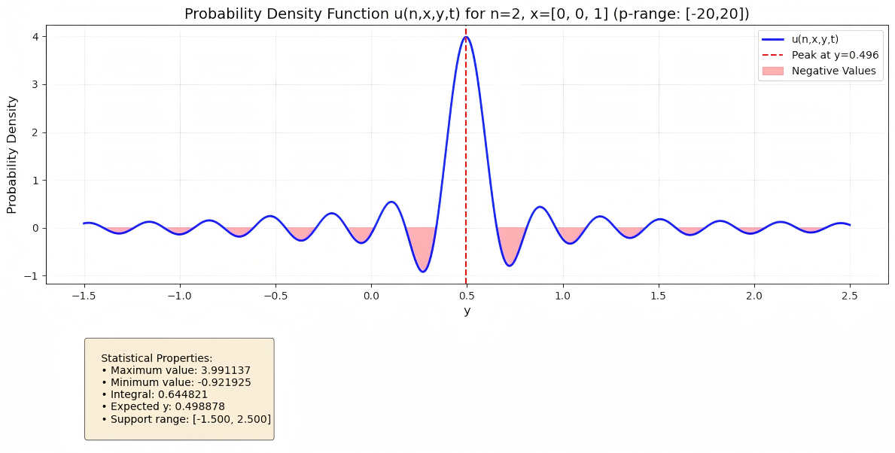

关于我
我目前在兰州大学萃英学院攻读数学与应用数学，大三本科生。我专注于数学与人工智能交叉方向的研究
我的研究主要集中在 AI × Science、Deep BSDE Method、Bioinformatics、计算代数
我主持或参与了多个交叉学科研究，包括球面BSDES算法开发、DNA甲基化预测模型与可解释性框架Bio-Prism的构建、点云等变网络在零件表征识别的应用等
未来，我希望在世界模型、具身智能、AI × science领域做一些工作
Email: heyi2023@lzu.edu.cn
教育背景
兰州大学 (Lanzhou University)
2023.09 - 至今- GPA: 4.02 / 5.0
- Rank: Top 5%
- 荣誉奖项: 2025 MCM/ICM Finalist (Top 2%)
- 学生工作: 数学与统计学院游泳队队长、萃英学院田径队队长
技能
编程语言
Python (PyTorch)
C & C++
MATLAB
开发工具
VS Code & SSH
WSL & Docker
算法基础
数值计算
Monte Carlo
FFT & IFFT
创作工具
LaTeX
Markdown
HTML & CSS
其他技能
AutoDL 算力云
Web Deployment
科学研究
Deep BSDES: 球面 Fokker-Planck 与 Feynman-Kac 方程求解
针对球面几何约束下的高维偏微分方程，利用深度学习与随机微分方程(BSDE)结合方法进行数值求解，解决了传统方法在高维下的维数灾难问题。

BPDNA-GME模型 与 Bio-Prism框架
开发基于 FiLM & MoE 的DNA甲基化预测框架，提出Bio-Prism可解释性框架，强调内部机制分析是可解释性的必要条件。

工业零件表征组装
采用点云级别对比学习与等变神经网络思路，迁移PointNet学习零件表征

有限链上保向映射幺半群及不动点统计
实现多种半群映射计算，映射不动点计算等，统计分析提出规律

Ask "Ver" (My AI Assistant)
我基于 Dify 开发了专属大模型助手 Ver。它学习了我所有的科研笔记和项目代码。